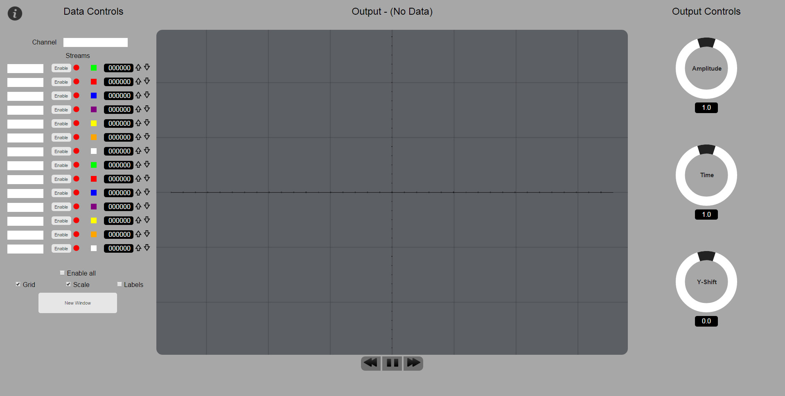

Welcome to the oscilloscope application page, here you'll find all the instructions to visualise your data.
At the moment the app will only visualise data from pubnub, hopefully in the future it will visualise data from other sources.

The image above shows the main oscilloscope page. There are three main areas to consider:
- Data Controls - These allow you to enter the relevant details of the data that you'd like to see and filter out the individual streams as desired.
- Output - Where the data is actually displayed.
- Output Controls - Allow you to manipulate the data so that you can focus on the relevant points of interest.
To start viewing data enter the required channel name in the Channel input box (at the top left) and press Enter. The scope will then attempt to retrieve all the information from the requested channel and display the following message (note the channel name in the Channel input box):
If this is successful then all the data streams will be shown in the streams column on the left-hand side as illustrated below:
If for some reason the data could not be retrieved then you will see the following error message.
Ensure that you have typed the channel name correctly and try again. If the scope cannot retrieve the data after repeated attempts then the channel may not be communicating. Further technical assistance should be sought in this case.
Once the streams have been populated with the relevant data then you may enable them to see what the data looks like. Just click the Enable button next to the relevant stream, the small circle will change colour from red to green, and you should see data appear in the output window. You will also see the numeric value of the data appear in the display next to the stream name. The following illustrates a single stream of data enabled; in this case a stream called "wave":

If one of the arrows next to the numeric display is highlighted (shown below as the up arrow being coloured green) then this means that the data is beyond the current display limits (either too big or too small). In this case adjusting the output controls should enable the data to be displayed correctly. The subsequent section discusses the output controls:
There are currently three jogger wheels used to control the output data:
- Amplitude - This scales the output; effectively reducing or increasing the height of the data on screen. If one of the output indicator arrows are illuminated (discussed above) then this is an effective way to bring the data back into view. The value below the wheel indicates the degree of saling taking place; the larger the number the greater the data values will be. Conversely a value less then 1.0 indicates that the data has been reduced in size.
- Time - Scales the time axis of the data; effectively "stretching" or "contracting" the data on screen. Once again the value below the wheel indicates how much the time has been scaled. The larger the value the more "stretched out" the data.
- Y-Shift - This shifts the data up and down the screen but does not alter the scale/shape. This may be an alternative method for bringing data into the output display if it is too big or small. The number below the wheel in this case gives an indication as to how much the data has been moved. Positive values indicate that the data has been moved up the screen from its original position and negative numbers signify downward movement.
FAQ
I can't connect to the relevant channel?
Ensure that you have typed the channel name correctly and tried a few times. If you still cannot see data then you need to seek technical assistance. See the contact details below.
I can't see my data but I have connected successfully?
Have you enabled the relevant stream? The icon next to it will go green.
Can you see a numeric value (other than 000000) in the output display - the white numerals against a black background? If you can then data is being retrieved.
Are either of the arrow indicators illuminated in green?
If so then the data is being retrieved but it's too big/small to be displayed. In this case adjust the amplitude jogger wheel anti-clockwise (so that the scale decreases)
and it should eventually appear.
If you keep spinning and you still can't see your data it may just be too big. The screen output currently displays values up to about 200 units, so if your data is millions
of units large then it may not be practical to view it.
I have found a bug or have a suggestion.
Great! Check the contact section below and tell me what you've found or what you'd like to see added.
Contact
If you need any further info then let me know by clicking here.